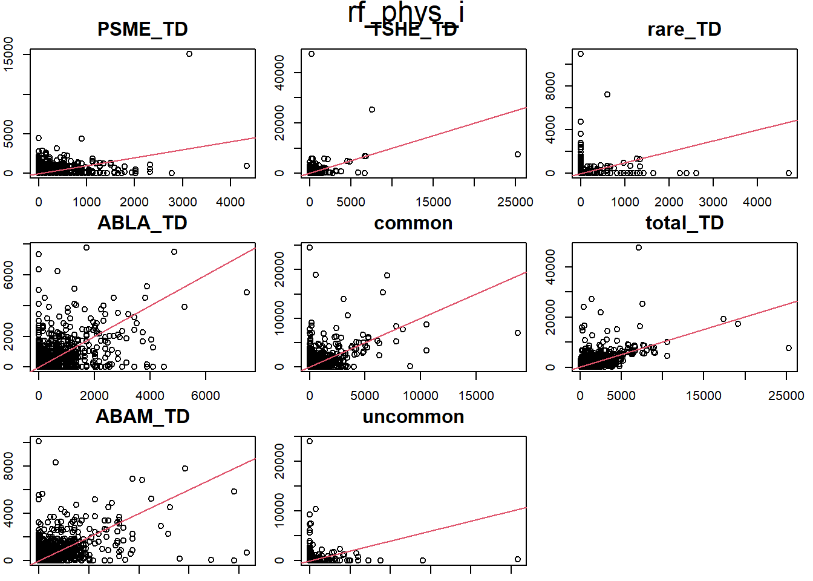

Code
library(tidyverse, quietly = T)
library(esquisse)
library(yaImpute)
library(RSQLite)
library(vegan)
library(randomForest)
library(RSQLite)
options(scipen = 999)The last imputation qmd was getting too long. This is a continuation.
I intend to explore using categorical variables. It was discussed that I try Ecoregion. I also found a variable for soil moisture, PHYSCLCD. It’s in the cond table.
There is also probably a better way to summarize species. I used species prevalence before, but it wasn’t a great tool. Some species are common in one FPAG and not in another. I’d like to use them all, but it’s not working. There are too many potential spp. There’s about 49 in the new full set. Most of those are rare species. At least when viewed from the full set.
I could play with the idea of using total TD and k = 100 to pull a set of probabilities if regen occurs. Prob being the number of plots with regen out of 100.
I have also not done much to visualize the seedlings vs predictors. I have a different qmd set up for that, but I might combine it here.
I have a pretty good handle on what this data can do. I need to decide what is good enough. At what point can this setup be said to be reasonable.
This is copied from Imputation It is the code to imput with FPAG.
library(tidyverse, quietly = T)
library(esquisse)
library(yaImpute)
library(RSQLite)
library(vegan)
library(randomForest)
library(RSQLite)
options(scipen = 999)Setup yai
KEEP <- NULL
rm(list = ls()[!ls() %in% KEEP])
# Pulling from my new interim save point
con <- dbConnect(RSQLite::SQLite(), "./attempt_032524.db")
imp_data <- dbGetQuery(con, "select * from imp_data")
zimp_data <- dbGetQuery(con, "select * from regen_only_imp_data")
plots <- dbGetQuery(con, "select * from fvs_plotinit_plot")
plants_ref <- dbGetQuery(con, "select * from plants_ref")
dbDisconnect(con)
rm(con)
load("sp_prevalence.Rdata")
imp_data_FPA <- imp_data |>
mutate(
fpa = str_sub(FPAG, 1, 3)
)
imp_data_FPA <- imp_data_FPA |> mutate(
common = rowSums(imp_data_FPA[,sp_prevalence$common]),
uncommon = rowSums(imp_data_FPA[,sp_prevalence$uncommon]),
rare_TD = rowSums(imp_data_FPA[,sp_prevalence$rare]),
total_TD = rowSums(imp_data_FPA[grep("_TD", names(imp_data_FPA))])
) |>
select(-sp_prevalence$rare, -sp_prevalence$uncommon, -sp_prevalence$common)
imp_data_FPA <- imp_data_FPA |>
relocate(fpa, .after = FPAG)
# I am removing the extra rows to speed up the imputation test.
fpas <- imp_data_FPA |>
filter(
total_TD > 0
)
refs <- rownames(fpas[1:(3*nrow(fpas)/4),])
x <- fpas |> select(1:5)
x <- remove_rownames(x)
x <- column_to_rownames(x, "STANDPLOT_CN")
yfull <- fpas |> select(1, 7:ncol(fpas))
y <- yfull[refs,]
y <- remove_rownames(y)
y <- column_to_rownames(y, "STANDPLOT_CN")
yfull <- remove_rownames(yfull)
yfull <- column_to_rownames(yfull, "STANDPLOT_CN")
k = 10
yrf <- cbind(whatsMax(y[ ,1:(ncol(y)-1)]), y[, ncol(y)])
names(yrf) <- c('Max_SP', 'sp_max_TD', 'total_TD')
t <- fpas |> group_by(FPAG) |>
summarise(n = n()) |>
arrange(desc(n)) |>
filter(n > 120)
keep <- t$FPAG
t2 <- fpas |>
filter(FPAG %in% keep)
t2$FPAG <- as.factor(t2$FPAG)Run yai
refs <- rownames(t2[1:(3*nrow(t2)/4),])
x <- t2 |> select(1:5)
x <- remove_rownames(x)
x <- column_to_rownames(x, "STANDPLOT_CN")
yfull <- t2 |> select(1, 7:ncol(t2))
y <- yfull[refs,]
y <- remove_rownames(y)
y <- column_to_rownames(y, "STANDPLOT_CN")
yfull <- remove_rownames(yfull)
yfull <- column_to_rownames(yfull, "STANDPLOT_CN")
k = 10
yrf <- cbind(whatsMax(y[ ,1:(ncol(y)-1)]), y[, ncol(y)])
names(yrf) <- c('Max_SP', 'sp_max_TD', 'total_TD')
# trf <- yai(x = x, y = yrf, method = "randomForest", k = k)
# save(trf, file = "trf.Rdata")
load("trf.Rdata")
trf_i <- impute(trf, ancillaryData = y)Plot imputed
Reminder that this is the plot from the last page, the last imputation. It is here for reference.
par(mar = c(1,2,3.2,1))
plot(trf_i)
# plot(frf2_set)
# xlim = c(1,10)The highest total_TD in our area is 47827.850. That is just the seedlings. How many tree per square foot are in there?
max_tpa <- 47828
sqft_ac <- 43560
max_tpa/sqft_ac[1] 1.09798I guess 1.09798 trees per square foot isn’t insane. There is going to be a lot of die off. I wonder how many per year FVS will predict?
Check plot 22399018010497_3 the next time I run FVS. This stand is new, it’s not in the last sets I ran.
Note to self to add condid to the database next time
con <- dbConnect(RSQLite::SQLite(), "../../Data/_FIADB_WA.db")
# dbExecute(con, "delete from cond where length(PLT_CN) < 7")
cond <- dbGetQuery(con, "select PLT_CN, CONDID, PHYSCLCD from cond")
dbDisconnect(con)
g <- read_csv("./good_SUB_plots2.csv",
col_types = c("cccci"))
g <- left_join(g, cond, join_by(PLT_CN, CONDID))
g <- g |> mutate(
STANDPLOT_CN = str_c(PLT_CN, "_", SUBP)
) |>
select(-SUBPLOT_CN)
x <- left_join(plots, g, join_by(STANDPLOT_CN))
y <- x |> select(STANDPLOT_CN, PHYSCLCD)
imp_data <- left_join(imp_data, y, join_by(STANDPLOT_CN))
imp_data <- imp_data |> relocate(PHYSCLCD, .after = FPAG)
imp_data_FPA <- imp_data |>
mutate(
fpa = str_sub(FPAG, 1, 3)
)imp_data_FPA <- imp_data_FPA |> mutate(
common = rowSums(imp_data_FPA[,sp_prevalence$common]),
uncommon = rowSums(imp_data_FPA[,sp_prevalence$uncommon]),
rare_TD = rowSums(imp_data_FPA[,sp_prevalence$rare]),
total_TD = rowSums((imp_data_FPA[grep("_TD", names(imp_data_FPA))]))
) |>
select(-sp_prevalence$rare, -sp_prevalence$uncommon, -sp_prevalence$common)
imp_data_FPA <- imp_data_FPA |>
relocate(fpa, .after = FPAG)
imp_data_FPA <- imp_data_FPA |> relocate(PHYSCLCD, .before = FPAG)
# I am removing the extra rows to speed up the imputation test.
fpas <- imp_data_FPA |>
filter(
total_TD > 0
)
t <- fpas |> group_by(FPAG) |>
summarise(n = n()) |>
arrange(desc(n)) |>
filter(n > 120)
keep <- t$FPAG
t2 <- fpas |>
filter(FPAG %in% keep)
t2$FPAG <- as.factor(t2$FPAG)
t2$PHYSCLCD <- as.factor(t2$PHYSCLCD)n_distinct(t2$FPAG)[1] 26n_distinct(t2$PHYSCLCD)[1] 13198 FPAGs in the full set of imp_data. 44 in t2, after filtering for only those with at least 120 subplots.
15 distinct physcds in imp_data, and t2.
refs <- rownames(t2[1:(3*nrow(t2)/4),])
x <- t2 |> select(1:6)
x <- remove_rownames(x)
x <- column_to_rownames(x, "STANDPLOT_CN")
yfull <- t2 |> select(1, 8:ncol(t2))
y <- yfull[refs,]
y <- remove_rownames(y)
y <- column_to_rownames(y, "STANDPLOT_CN")
yfull <- remove_rownames(yfull)
yfull <- column_to_rownames(yfull, "STANDPLOT_CN")
k = 10
yrf <- cbind(whatsMax(y[ ,1:(ncol(y)-1)]), y[, ncol(y)])
names(yrf) <- c('Max_SP', 'sp_max_TD', 'total_TD')
# rf_phys <- yai(x = x, y = yrf, method = "randomForest", k = k)
# save(rf_phys, file = "rf_phys.Rdata")
load("rf_phys.Rdata")plot(rf_phys, vars = yvars(rf_phys))
# plot(rf, vars = yvars(rf))
trf_i <- impute(trf, ancillaryData = y)
rf_phys_i <- impute(rf_phys, ancillaryData = y)
Adding Physcd didn’t help as much as I thought it would, but it did do something. I need to compare the numbers.
par(mar = c(1,2,3.2,1))
plot(rf_phys_i)
plot(trf_i)
# plot(frf2_set)
# xlim = c(1,10)
trf_rmsd <- rmsd.yai(trf_i)
ph_rmsd <- rmsd.yai(rf_phys_i)
ph_rmsd <- rownames_to_column(ph_rmsd, "spec")
trf_rmsd <- trf_rmsd |> rownames_to_column("spec")
z <- left_join(ph_rmsd, trf_rmsd, by = "spec",
suffix = c(".ph", ".trf"))
z <- z |> mutate(diff = rmsd.ph - rmsd.trf)
z spec rmsd.ph rmsd.trf diff
1 PSME_TD 297.5946 266.1156 31.47904
2 ABLA_TD 384.9643 354.0954 30.86889
3 ABAM_TD 410.7614 380.8726 29.88885
4 TSHE_TD 720.9237 673.2647 47.65899
5 common 713.6788 663.5073 50.17154
6 uncommon 459.7389 427.1661 32.57280
7 rare_TD 228.7634 217.4765 11.28688
8 total_TD 1143.1015 996.9510 146.15054The imputation with physcode is lower in rmsd across the board.
I am not sure what the distance is for RF, but I know it needs to be minimized.
I was testing out if I could get the FVS variables without running FVS. It took a while for FVS to run the 25k plots I selected. So, I was trying to get the same variables straight from FIA while waiting to start the last set of imputations.
library(tidyverse)
library(RSQLite)
library(readxl)
library(writexl)
options(scipen = 999)con <- dbConnect(RSQLite::SQLite(), "C:/RxFire/Data/_FIADB_WA.db")
standlist <- read_csv("C:/RxFire/Regen/Regen_Notes/standlist03242024.csv",
col_types = c("cccc"))
n_distinct(standlist$STAND_CN)
STAND_CN <- NULL
STAND_CN <- str_c("'", unique(standlist$STAND_CN), "'")
STAND_CN <- str_flatten_comma(STAND_CN)
# COND::BALIVE Basal area per acre of livetrees
subcond <- dbGetQuery(con, str_c(
"select * from subp_cond where PLT_CN IN (", STAND_CN, ")"))
cond <- dbGetQuery(con, str_c(
"select * from cond where PLT_CN IN (", STAND_CN, ")"))
# P2VEG_STR::COVER_PCT, NT AND TT ARE TREES.
veg <- dbGetQuery(con, str_c(
"select * from P2VEG_SUBP_STRUCTURE where PLT_CN IN (", STAND_CN, ")"))
tree <- dbGetQuery(con, str_c(
"select * from FVS_TREEINIT_PLOT where STAND_CN IN (", STAND_CN, ")"))
subcond <- subcond |>
mutate(
STANDPLOT_CN = str_c(as.character(PLT_CN), "_", as.character(SUBP))
)
s <- subcond |> select(PLT_CN, STANDPLOT_CN, SUBP, CONDID, )
c <- left_join(s, cond, join_by(PLT_CN, CONDID))
c2 <- c |> select(STANDPLOT_CN, BALIVE) |> drop_na()
veg <- veg |>
mutate(
STANDPLOT_CN = str_c(as.character(PLT_CN), "_", as.character(SUBP))
)v <- veg |> filter(LAYER == 5)
v <- v |> filter(GROWTH_HABIT_CD == "TT")
v2 <- v |> group_by(STANDPLOT_CN) |>
summarise(CC = sum(COVER_PCT))p. 183 FVS essentials.
\[ SDI = \sum (TPA_i (\frac{DBH}{10})^{1.605}) \] TPA_i is tpa for a tree record.
SDI is the sum of Trees per acre times the DBH for those trees, divided by ten to the power of 1.605.
DBH and tpa are in the tree table.
x <- standlist |> select(STANDPLOT_CN)
t <- left_join(x, tree, by = "STANDPLOT_CN")
c <- left_join(x, cond, by = "STANDPLOT_CN")
v <- left_join(x, veg, by = "STANDPLOT_CN")
tpa <- t |>
mutate(sdi = (TREE_COUNT * ((DIAMETER/10)^1.605)))
sdi <- tpa[tpa$HISTORY == 1, ] |> group_by(STANDPLOT_CN) |>
summarize(SDI = sum(sdi)) |> drop_na()y <- left_join(x, sdi, by = "STANDPLOT_CN")
y <- left_join(y, c2, by = "STANDPLOT_CN")
y <- left_join(y, v2, by = "STANDPLOT_CN")Canopy cover is not well predicted by the p2veg tables.
I have been referencing the yaImpute paper, but I am reading from the r forge now. There are functions and descriptions here that were not in the paper. Probably, the package has been updated since the paper was published.
# 527 zero distances
imp_zx <- imp_data_FPA |>
filter(CC != 0 & BA != 0 & SDI > 1)
# 40 zero distances
imp_zx <- imp_zx |>
filter(total_TD > 0)
# 15
imp_zx <- imp_zx |>
filter(CC > 1 & BA > 1 & SDI > 1)
imp_zx <- imp_data_FPA |>
filter(CC != BA & CC != SDI & BA != SDI)
imp_zx <- imp_zx |>
filter(total_TD > 0)
imp_zx <- imp_data_FPA |>
filter(!near(CC, BA, tol = .01) & !near(CC, SDI, tol = .01))imp_zx <- imp_data_FPA
X <- imp_zx |> select(STANDPLOT_CN, CC, BA, SDI)
X <- remove_rownames(X)
X <- column_to_rownames(X, "STANDPLOT_CN")
Y <- imp_zx |> select(STANDPLOT_CN, total_TD)
Y <- remove_rownames(Y)
Y <- column_to_rownames(Y, "STANDPLOT_CN")
mal <- yai(x = X, y = Y, method = "mahalanobis", k = k)
msn <- yai(x = X, y = Y, method = "msn", k = k)
ewz <- errorStats(mal, msn)Warning in notablyDistant(x, p = 1 - pzero): when computing threshold, 1884
zero distances of 24621 references were set to 0.0000000001341627Warning in notablyDistant(x, p = plg): when computing threshold, 1884 zero
distances of 24621 references were set to 0.0000000001341627Warning in notablyDistant(x, p = plg): when computing threshold, 1884 zero
distances of 24621 references were set to 0.00000000006125145imp_zx <- imp_data_FPA
X <- imp_zx |> select(STANDPLOT_CN, CC, BA, SDI)
X <- remove_rownames(X)
X <- column_to_rownames(X, "STANDPLOT_CN")
X <- X |> unique()
x <- X
x <- rownames_to_column(x, "STANDPLOT_CN") |> select(STANDPLOT_CN)
imp_zx <- left_join(x, imp_zx, by = "STANDPLOT_CN")
Y <- imp_zx |> select(STANDPLOT_CN, total_TD)
Y <- remove_rownames(Y)
Y <- column_to_rownames(Y, "STANDPLOT_CN")
mal <- yai(x = X, y = Y, method = "mahalanobis", k = k)
msn <- yai(x = X, y = Y, method = "msn", k = k)
ewoz <- errorStats(mal, msn)
ewoz$common
mal.see mal.rmmsd0 mal.mlf
total_TD 842.9472 71.48992 841.4301
$mal
mal.rmsd mal.rmsdlg mal.sei mal.dstc
total_TD 428.8956 534.1788 425.9061 422.8955
$msn
msn.rmsd msn.rmsdlg msn.sei msn.dstc
total_TD 1047.899 1278.775 1046.679 1045.458x <- msn$neiDstRefs |> as.data.frame()
x <- x[x$Dst.k1 == 0,]
x$STANDPLOT_CN <- row.names(x)
t <- x |> select(STANDPLOT_CN)
t2 <- left_join(t, imp_zx, by = "STANDPLOT_CN")
t2 [1] STANDPLOT_CN CC BA SDI PHYSCLCD
[6] FPAG fpa PSME_TD ABLA_TD ABAM_TD
[11] TSHE_TD common uncommon rare_TD total_TD
<0 rows> (or 0-length row.names)The warning about zero distances is in reference to plots that have the same predictors. For example, if two or more plots share cc = 1, ba = 2, sdi = 10, they are separated by zero distance. Given the way this data was made, I am surprised that there aren’t more sets with the same.
# ewoz is the second row
rbind(ewz$mal, ewoz$mal) mal.rmsd mal.rmsdlg mal.sei mal.dstc
total_TD 413.7486 455.0015 413.7486 413.7486
total_TD1 428.8956 534.1788 425.9061 422.8955# ewoz is the second row
rbind(ewz$msn, ewoz$msn) msn.rmsd msn.rmsdlg msn.sei msn.dstc
total_TD 1005.301 1101.721 1005.301 1005.301
total_TD1 1047.899 1278.775 1046.679 1045.458# ewoz is the second row
rbind(ewz$common, ewoz$common) mal.see mal.rmmsd0 mal.mlf
total_TD 819.0953 0.0000003082842 819.0953
total_TD1 842.9472 71.4899191291163 841.4301Removing the zero distance observations, rmsd is higher. In fact, all mal error stats are higher. All msn error stats are higher as well. As are the common error stats. The common stats are used to calculate some or all of the others.
mal.rmmsd0 is the average of the squared differences where distance between X variables is near zero. It is an estimate of pure error and measurement error, plus bias. Meaning there is more variability when there are no zero distances. I would like to explore what the differences are between the zero distance between X variable plots. I think it would give me a good idea of our error.
# t2 <- left_join(t, imp_zx, by = "STANDPLOT_CN")
t3 <- t2 |> mutate(idk = CC + BA + SDI) |>
relocate(idk) |> arrange(idk)
unique(t3$idk)numeric(0)t3$idk <- as.factor(t3$idk)
t4 <- t3 |> group_by(idk)
tapply(t4$total_TD, t4$idk, summary)logical(0)For each set, the total_TDs are the same. That is interesting.
t5 <- left_join(t, imp_data, by = "STANDPLOT_CN")
t5 <- t5 |> mutate(idk = round(CC + BA + SDI, 1)) |>
relocate(idk) |> arrange(idk)
t5 <- t5 |> mutate(total_TD = rowSums(t5[grep("_TD", names(t5))]))
unique(t5$idk)numeric(0)t5$idk <- as.factor(t5$idk)
t5 <- t5 |> group_by(idk)
t5 <- t5 |> select(where(~ any(. != 0)))Adding missing grouping variables: `idk`# t6 <- tapply(t5, t5$idk, summary)
# t6$"8.4"
# str(t6)t5 |> filter(idk == 8.4)|> select(where(~ any(. != 0)))Adding missing grouping variables: `idk`# A tibble: 0 × 1
# Groups: idk [0]
# ℹ 1 variable: idk <fct>t5 |> filter(idk == 9.2)|> select(where(~ any(. != 0)))Adding missing grouping variables: `idk`# A tibble: 0 × 1
# Groups: idk [0]
# ℹ 1 variable: idk <fct>t5 |> filter(idk == 15.2)|> select(where(~ any(. != 0)))Adding missing grouping variables: `idk`# A tibble: 0 × 1
# Groups: idk [0]
# ℹ 1 variable: idk <fct>t5 |> filter(idk == 19)|> select(where(~ any(. != 0)))Adding missing grouping variables: `idk`# A tibble: 0 × 1
# Groups: idk [0]
# ℹ 1 variable: idk <fct>t5 |> filter(idk == 19.5)|> select(where(~ any(. != 0)))Adding missing grouping variables: `idk`# A tibble: 0 × 1
# Groups: idk [0]
# ℹ 1 variable: idk <fct>t5 |> filter(idk == 21.1)|> select(where(~ any(. != 0)))Adding missing grouping variables: `idk`# A tibble: 0 × 1
# Groups: idk [0]
# ℹ 1 variable: idk <fct>t5 |> filter(idk == 50.8)|> select(where(~ any(. != 0)))Adding missing grouping variables: `idk`# A tibble: 0 × 1
# Groups: idk [0]
# ℹ 1 variable: idk <fct>errorStats(mal, msn, scale = T)$common
mal.see mal.rmmsd0 mal.mlf
total_TD 0.8230136 0.06979936 0.8215324
$mal
mal.rmsd mal.rmsdlg mal.sei mal.dstc
total_TD 0.4187533 0.5215468 0.4158345 0.4128951
$msn
msn.rmsd msn.rmsdlg msn.sei msn.dstc
total_TD 1.023119 1.248535 1.021928 1.020736# errorStats(mal, trf)While trying to figure out if there is a way to get errorStats to work. I Noticed that there are some total_TDs where there are no trees in the other columns.
There was a line that selected rowSums based on index.
t1 <- imp_zx |> select(STANDPLOT_CN)
t1 <- left_join(t1, imp_data, by = join_by(STANDPLOT_CN))
head(t1) STANDPLOT_CN CC BA SDI FPAG PHYSCLCD ABGR_TD PIPO_TD PSME_TD
1 12964130010497_1 27 65.68756 113 CWF4 23 0.0000 0 0
2 12964130010497_2 16 40.77580 66 CWF4 23 0.0000 0 0
3 12964130010497_3 22 45.24877 101 CWF4 23 149.9306 0 0
4 12964130010497_4 61 111.67963 277 CWF4 23 0.0000 0 0
5 12964449010497_1 13 35.05209 49 CDS6 12 0.0000 0 0
6 12964449010497_2 0 0.00000 0 CDS6 12 0.0000 0 0
PIAL_TD ABLA_TD TSME_TD LALY_TD ABAM_TD THPL_TD PIEN_TD TSHE_TD ACGL_TD
1 0 0 0 0 0 0 0 0 0
2 0 0 0 0 0 0 0 0 0
3 0 0 0 0 0 0 0 0 0
4 0 0 0 0 0 0 0 0 0
5 0 0 0 0 0 0 0 0 0
6 0 0 0 0 0 0 0 0 0
PICO_TD LAOC_TD TABR2_TD CHNO_TD BEPA_TD PREM_TD ABPR_TD PIMO3_TD PRVI_TD
1 0 0 0 0 0 0 0 0 0
2 0 0 0 0 0 0 0 0 0
3 0 0 0 0 0 0 0 0 0
4 0 0 0 0 0 0 0 0 0
5 0 0 0 0 0 0 0 0 0
6 0 0 0 0 0 0 0 0 0
POTR5_TD ALRU2_TD QUGA4_TD CONU4_TD ACMA3_TD JUOC_TD FRLA_TD 2TB_TD POBAT_TD
1 0 0 0 0 0 0 0 0 0
2 0 0 0 0 0 0 0 0 0
3 0 0 0 0 0 0 0 0 0
4 0 0 0 0 0 0 0 0 0
5 0 0 0 0 0 0 0 0 0
6 0 0 0 0 0 0 0 0 0
MAFU_TD ARME_TD ABCO_TD PISI_TD PSMA_TD ALRH2_TD JUNI_TD BEUT_TD BEOC2_TD
1 0 0 0 0 0 0 0 0 0
2 0 0 0 0 0 0 0 0 0
3 0 0 0 0 0 0 0 0 0
4 0 0 0 0 0 0 0 0 0
5 0 0 0 0 0 0 0 0 0
6 0 0 0 0 0 0 0 0 0
PRPE2_TD JUHI_TD CHLA_TD PRAV_TD
1 0 0 0 0
2 0 0 0 0
3 0 0 0 0
4 0 0 0 0
5 0 0 0 0
6 0 0 0 0t2 <- t1 |> mutate(
common = rowSums(t1[,sp_prevalence$common]),
uncommon = rowSums(t1[,sp_prevalence$uncommon]),
rare = rowSums(t1[,sp_prevalence$rare]),
total_TD = rowSums(t1[grep("_TD", names(t1))])
) |>
select(-sp_prevalence$rare, -sp_prevalence$uncommon, -sp_prevalence$common)
head(t1) STANDPLOT_CN CC BA SDI FPAG PHYSCLCD ABGR_TD PIPO_TD PSME_TD
1 12964130010497_1 27 65.68756 113 CWF4 23 0.0000 0 0
2 12964130010497_2 16 40.77580 66 CWF4 23 0.0000 0 0
3 12964130010497_3 22 45.24877 101 CWF4 23 149.9306 0 0
4 12964130010497_4 61 111.67963 277 CWF4 23 0.0000 0 0
5 12964449010497_1 13 35.05209 49 CDS6 12 0.0000 0 0
6 12964449010497_2 0 0.00000 0 CDS6 12 0.0000 0 0
PIAL_TD ABLA_TD TSME_TD LALY_TD ABAM_TD THPL_TD PIEN_TD TSHE_TD ACGL_TD
1 0 0 0 0 0 0 0 0 0
2 0 0 0 0 0 0 0 0 0
3 0 0 0 0 0 0 0 0 0
4 0 0 0 0 0 0 0 0 0
5 0 0 0 0 0 0 0 0 0
6 0 0 0 0 0 0 0 0 0
PICO_TD LAOC_TD TABR2_TD CHNO_TD BEPA_TD PREM_TD ABPR_TD PIMO3_TD PRVI_TD
1 0 0 0 0 0 0 0 0 0
2 0 0 0 0 0 0 0 0 0
3 0 0 0 0 0 0 0 0 0
4 0 0 0 0 0 0 0 0 0
5 0 0 0 0 0 0 0 0 0
6 0 0 0 0 0 0 0 0 0
POTR5_TD ALRU2_TD QUGA4_TD CONU4_TD ACMA3_TD JUOC_TD FRLA_TD 2TB_TD POBAT_TD
1 0 0 0 0 0 0 0 0 0
2 0 0 0 0 0 0 0 0 0
3 0 0 0 0 0 0 0 0 0
4 0 0 0 0 0 0 0 0 0
5 0 0 0 0 0 0 0 0 0
6 0 0 0 0 0 0 0 0 0
MAFU_TD ARME_TD ABCO_TD PISI_TD PSMA_TD ALRH2_TD JUNI_TD BEUT_TD BEOC2_TD
1 0 0 0 0 0 0 0 0 0
2 0 0 0 0 0 0 0 0 0
3 0 0 0 0 0 0 0 0 0
4 0 0 0 0 0 0 0 0 0
5 0 0 0 0 0 0 0 0 0
6 0 0 0 0 0 0 0 0 0
PRPE2_TD JUHI_TD CHLA_TD PRAV_TD
1 0 0 0 0
2 0 0 0 0
3 0 0 0 0
4 0 0 0 0
5 0 0 0 0
6 0 0 0 0head(t2) STANDPLOT_CN CC BA SDI FPAG PHYSCLCD PSME_TD ABLA_TD ABAM_TD
1 12964130010497_1 27 65.68756 113 CWF4 23 0 0 0
2 12964130010497_2 16 40.77580 66 CWF4 23 0 0 0
3 12964130010497_3 22 45.24877 101 CWF4 23 0 0 0
4 12964130010497_4 61 111.67963 277 CWF4 23 0 0 0
5 12964449010497_1 13 35.05209 49 CDS6 12 0 0 0
6 12964449010497_2 0 0.00000 0 CDS6 12 0 0 0
TSHE_TD common uncommon rare total_TD
1 0 0.0000 0 0 0.0000
2 0 0.0000 0 0 0.0000
3 0 149.9306 0 0 149.9306
4 0 0.0000 0 0 0.0000
5 0 0.0000 0 0 0.0000
6 0 0.0000 0 0 0.0000Note to self, the magrittr pipe and native pipe are different. The magrittr pipe allows for substituting the position of the left hand side argument on the right with a “.”. The native pipe doesn’t. Curly braces overide the lhs to first argument rule. There is also an pipe called the exposition pipe, %$%.